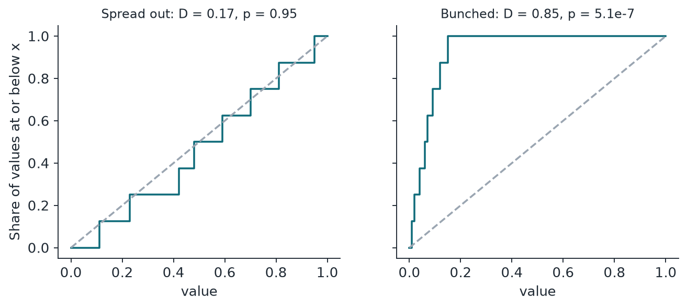
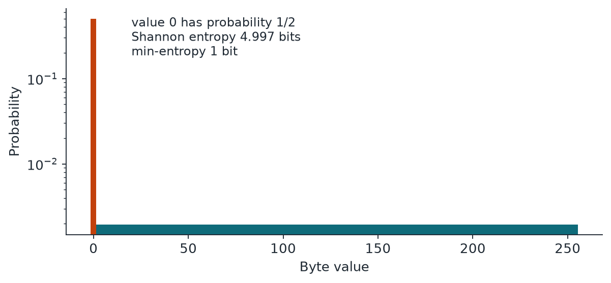

Chapter 2: Distributions, Corrections and Entropy¶
The tests in this book turn a count into a p-value using one of five shapes: binomial, normal, chi-square, Poisson and exponential. This chapter introduces them with small checkable numbers, adds the Kolmogorov-Smirnov test for a list of numbers, and explains why running many tests forces a correction. It then separates Shannon entropy from min-entropy, which is the measure that security depends on, and ends with the most important limit in the book: no test of the output alone can tell a good CSPRNG from a conditioned physical source.
2.1 Five distributions you will see again¶
Binomial: counting successes. Toss \(n\) coins, each landing heads with probability \(q\), and count the heads. The count follows a binomial distribution. With 10 fair coins, the chance of exactly 7 heads is 0.1172, and the chance of 7 or more is 0.1719.
Normal and erfc: the bell curve. Add up many small independent effects and you get a bell curve, whatever the effects were. We usually standardise a count into a z-score, which says how many standard deviations it sits from its expected value. The function erfc turns a z-score into a two-sided p-value. In the 60 heads example, \(z = (60 - 50)/5 = 2\), and \(\mathrm{erfc}(2/\sqrt{2}) = 0.0455\), close to the exact 0.0569.
Chi-square: adding up squared misses. Sort outcomes into cells, then measure how far each cell's count misses its expected count. Square the misses, scale them and add them up. For good data the total follows a chi-square distribution, written \(\chi^2(d)\). The number \(d\) is the degrees of freedom, usually the number of cells minus 1, and it is also the expected total. Roll a die 60 times and get counts 8, 12, 9, 11, 6, 14. Each cell expects 10, so \(X^2 = 42/10 = 4.2\) with \(d = 5\), and \(p = 0.521\). Nothing odd there.
You will also see the chi-square tail written with igamc, the regularised upper incomplete gamma function. Here \(\Gamma\) is the gamma function, which extends the factorial to non-whole numbers. For example, \(d = 255\) and \(X^2 = 270\) give 0.248 either way.
Poisson: counting rare events. When many independent chances each have a tiny probability, the number of events that occur follows a Poisson distribution with average \(\lambda\). With \(\lambda = 2\), zero events has probability 0.1353 and five or more has probability 0.0527.
Exponential: the size of one spectral value. Add up many unit-length arrows pointing in random directions. The squared length of the result, divided by the number of arrows, follows an exponential distribution with mean 1. Its tail falls fast: values above 3 happen with probability 0.0498, and values above 15 with probability 0.000000306. We use it for one spectral value at a time. For the biggest of many such values, apply the Sidak step in the next section.
One more tool: the Kolmogorov-Smirnov test. Sometimes we have a list of numbers and want to know whether they follow a claimed distribution. Sort them and draw a staircase that climbs by \(1/W\) at each of the \(W\) values. If the claim is right, the staircase hugs the claimed curve. The Kolmogorov-Smirnov statistic \(D\) is the biggest gap between the two, and it has a known distribution that gives a p-value. For the uniform distribution between 0 and 1, the curve is the straight line \(F(x) = x\). The eight values 0.11, 0.23, 0.42, 0.48, 0.59, 0.70, 0.81, 0.95 give \(D = 0.17\) and \(p = 0.95\). The eight bunched values 0.01, 0.02, 0.04, 0.06, 0.07, 0.09, 0.12, 0.15 give \(D = 0.85\) and \(p = 5.1 \times 10^{-7}\).

2.2 Why many tests need correction¶
Run one test at \(\alpha = 0.01\) and a good source fails 1% of the time. Run 18 independent tests and the chance that at least one fails is \(1 - 0.99^{18} = 16.5\%\). Look hard enough and something always looks odd. We saw exactly this: in our calibration, 11 of 120 samples of good data tripped at least one test at the 0.01 line.
So when we look at \(K\) results and care about the smallest one, we have to correct for having looked \(K\) times. There are two standard corrections, and given the smallest of \(K\) p-values, \(p_{\min}\), they are:
Bonferroni is valid however the results depend on each other, which is why it is our default. Sidak is exact when the results are independent, and it is slightly less harsh. In practice they are close: for \(K = 20\) and \(p_{\min} = 0.001\), Bonferroni gives 0.02 and Sidak gives 0.0198. We use Sidak in tests U1 and H2, where the coefficients are independent (or asymptotically so) and there are thousands of them.
The same idea sets the bar for the final verdict. With 18 statistical tests, we count a failure towards the verdict only when \(p < 0.01/18 \approx 0.000556\). None of the 120 good samples crossed that line on any test.
2.3 Entropy and min-entropy¶
Entropy measures surprise. Shannon entropy is the average surprise per symbol, and min-entropy is the surprise of the single most likely symbol:
For a uniform byte both equal 8 bits. For anything else, \(H_{\min} \le H\), sometimes by a lot. Imagine a source that outputs the byte 0 half the time and any of the other 255 values otherwise. Its Shannon entropy is 4.997 bits, which sounds healthy. Its min-entropy is 1 bit, because an attacker who simply guesses 0 is right half the time. Security depends on the attacker's best guess, so standards such as NIST SP 800-90B work with min-entropy.

2.4 Why no output test can separate a good CSPRNG from a conditioned QRNG¶
This is the most important limit in this guide. We state it plainly so that nobody expects otherwise.
A CSPRNG is, by definition, a generator whose output no practical test can tell apart from true coin flips. A conditioned QRNG's output is also, if the conditioner works, very close to true coin flips. So both should pass every test. If a test could reliably separate them, that test would be a break of the CSPRNG. The difference is real, but it lies in where the bits came from, and the bits themselves carry no label.
Our data shows this. These 15 samples all reach the same verdict, INDISTINGUISHABLE: os.urandom, SHA-256 counter mode, PCG32, xoshiro256** (those four with two seeds each), AES-OFB, Threefish, SHA-256 conditioned CPU jitter, RDRAND, RDSEED, random.org and the ANU quantum data.
So a clean result is not evidence of a quantum origin. To tell these sources apart you need the design, the raw data before conditioning, or the health data from the device. Our tests can show, with very strong evidence, that data follows a weak generator's simple rule, and they can recognise raw physical behaviour. Everything else gets the honest answer: output alone cannot say.
2.5 Summary¶
- Five distributions cover almost every test: binomial (counts of successes), normal and erfc (bell curve), chi-square (summed squared misses), Poisson (rare events) and exponential (one spectral value). The Kolmogorov-Smirnov test checks a list of numbers against a claimed distribution.
- Looking at \(K\) results and keeping the smallest needs a correction: Bonferroni \(\min(1,Kp_{\min})\) is valid whatever the dependence; Sidak \(1-(1-p_{\min})^K\) is exact for independent results.
- Shannon entropy is the average surprise; min-entropy \(-\log_2\max_v p_v\) is the surprise of the most likely value. Min-entropy is never larger, and it is what an attacker's best guess depends on.
- A CSPRNG is, by definition, a generator whose output no practical test separates from true coin flips. So no output test can separate a good CSPRNG from a conditioned QRNG; to tell them apart you need the design and the raw data.
2.6 Exercises¶
-
A die is rolled 60 times and the six faces show 5, 9, 10, 11, 12 and 13 times. Compute the chi-square statistic, its degrees of freedom and the p-value.
Answer
Each face expects 10, so \(X^2=(25+1+0+1+4+9)/10=4.0\). There are 6 cells, so \(d=5\). The upper tail of \(\chi^2(5)\) at 4.0 is \(p\approx0.549\). Nothing is odd.
-
Twenty tests are run, and the smallest p-value is 0.002. Give the Bonferroni and Sidak corrected values, and say which you would use if the tests were known to be dependent.
Answer
Bonferroni: \(\min(1,20\times0.002)=0.04\). Sidak: \(1-(1-0.002)^{20}=0.0392\). For dependent tests use Bonferroni, which stays valid under any dependence. Sidak is exact only for independent results.
-
Ten independent tests are each run at \(\alpha=0.01\) on a perfect source. What is the probability that at least one fails?
Answer
\(1-0.99^{10}=0.0956\), about 9.6%. This is why a single failing test among many is weak evidence.
-
A byte source outputs 0 with probability 1/4, and each of the other 255 values with equal probability \(0.75/255\). Find its min-entropy and its Shannon entropy.
Answer
Min-entropy: \(-\log_2(1/4)=2\) bits. Shannon entropy: \(-\tfrac14\log_2\tfrac14-0.75\log_2(0.75/255)=0.5+0.75\times8.409=6.807\) bits. A datasheet quoting about 6.8 bits per byte would overstate what an attacker faces: guessing 0 succeeds one time in four.
-
A friend says: "Our generator passed every test in the battery, so it must be a true random source." Explain what is wrong.
Answer
A pass only means that no test saw a defect. A CSPRNG is designed so that no practical test can separate its output from true coin flips, and a conditioned physical source is also close to true coin flips if its conditioner works. If a test could reliably separate them, that test would be a break of the CSPRNG. The difference lies in where the bits came from, and the bits carry no label. To tell sources apart you need the design, the raw data before conditioning, or health data from the device.